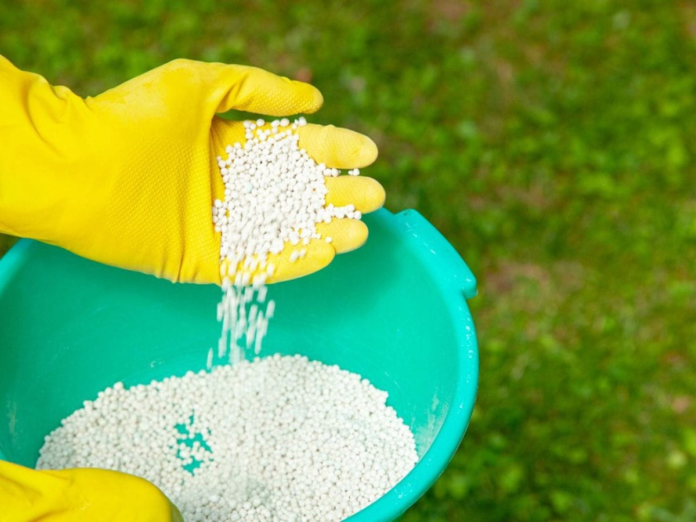
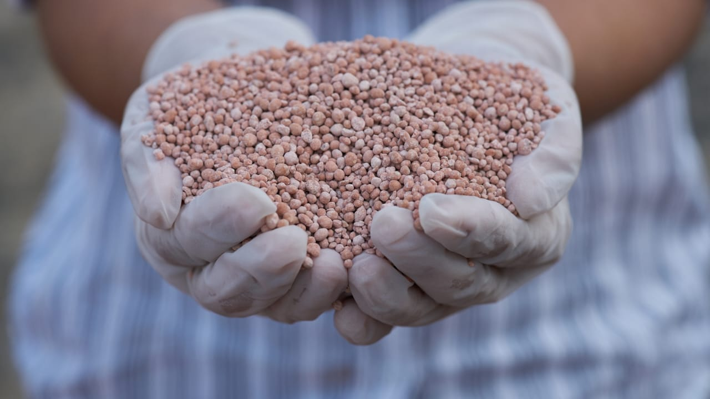
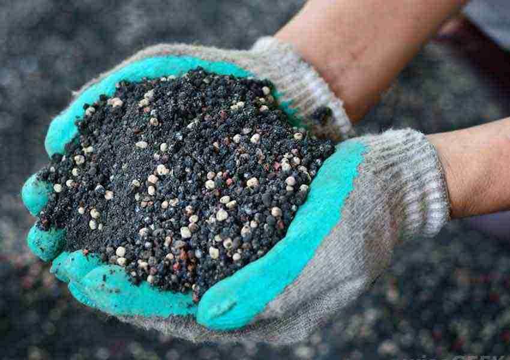
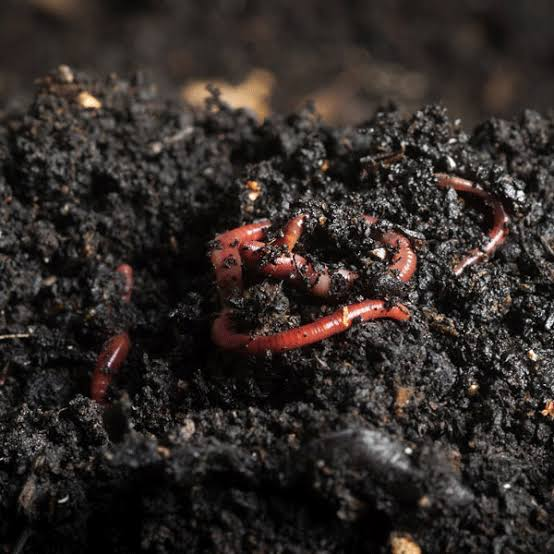

உரங்கள் பயிரின் நல்ல வளர்ச்சிக்கு தேவையான சத்துக்களை வழங்குகின்றன. சில முக்கியமான உரங்களை பற்றி கீழே அறியலாம்.

நைட்ரஜன் உரம்
சிறப்பு பயிர்கள்: அரிசி, கோதுமை, சர்க்கரைவள்ளி
சிறப்பு: செடியின் இலை வளர்ச்சியை ஊக்குவிக்கிறது.

பொட்டாசியம் உரம்
சிறப்பு பயிர்கள்: வாழை, உருளைக்கிழங்கு, காபி
சிறப்பு: செடியின் நோய் எதிர்ப்பு சக்தியை அதிகரிக்கிறது

மிக்சு உரம்
சிறப்பு பயிர்கள்: மகசூல் அதிகரிக்க விரும்பும் அனைத்து பயிர்களுக்கும்
சிறப்பு: பல்வேறு ஊட்டச்சத்துக்களை ஒரே நேரத்தில் வழங்குகிறது

உயிர்ப்பொருள் உரம்
சிறப்பு பயிர்கள்: மரக்கன்றுகள், காய்கறிகள், பழக்கன்றுகள்
சிறப்பு: மண் வளத்தை அதிகரிக்கவும், நீர் ஈரத்தை மேம்படுத்தவும் பயன்படுகிறது.